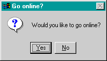
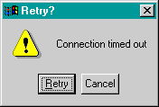

landialler
[ about | screenshots | download ]Welcome to the landialler project home page. Apologies for the lack of visual stimulation; so far I've been concentrating on landialler's portabiltiy instead of making this web page look gorgeous.
About
landialler enables several computers on a LAN (Local Area Network) to share control of a dial up connection to the Internet. To see if landialler would be useful to you, try answering these questions:
-
Do you have several computers at home? Can they be connected
together to form a small network?
-
Do you connect to the Internet intermittently (e.g. via a
phone line)?
- Can you configure your network so that all your computers can access the Internet at once? This is the trickiest bit, but is well worth the effort. There are lots of instructions available on how to set it up with Linux; see the further reading section for more details.
If you said yes (or nearly yes) to all or most of the above questions then (with a bit of tweaking) landialler will enable any of the computers on your home network to control your Internet connection.
If you said no to all of them, then landialler is probably not going to be of much use to you.
landialler comes in two parts:
-
The client
The client is a small graphical application that is run on a computer without a modem. -
The server
The server is a daemon program (i.e. it is always running) that sits on the computer that has the modem, waiting for a client to ask it to connect to the Internet. Currently, only POSIX compliant operating systems (i.e. Unix) are supported. If there is demand for Windows support then it will be added in due course.
The client and server are both written in Python and communicate with each other using XML-RPC.
Screenshots
These screenshots were made on Windows, but the landialler client works equally well on Linux (though it has to be said it doesn't look very nice - the Tk GUI toolkit is not an attractive beast).
|
 Are you sure now? |
 Success! |
 Ahh, go on go on go on, you will... |
So what's happening here?
-
After "Yes" has been clicked on the first dialog the client
sends an XML-RPC message to the server, instructing the
modem to connect to the Internet. The server actually runs
an operating system dependent script, so landialler can be
easily configured to use different operating systems and
different dial up hardware and software.
-
Once the script has started and the server is dialling up,
the client continually asks the server for a progress
update. If the connection is made inside the (configurable)
time limit then the second dialog pops up. To close the
connection just click OK (yep, you're right - that button
should say "Disconnect", but I need to learn some Tk first).
-
Finally, if the time limit is hit before the connection has
been made successfully you get the option to try again. You
may want to tweak the time out value, which is easy because
it's stored in the landialler configuration file. The
default time limit for setting up a new connection is two
minutes.
Download
Both the client (called landialler) and the server (called landiallerd) are available from the SourceForge project page. You will also want to grab the gmalib.py library while you're there...
Further Reading
To be able to run the landialler server you need a Unix box configured to do some sort of Network Address Translation (NAT) or IP Masquerading. You can use any modern Unix system, so long as it can run Python 2.1 software. I use Linux, so I've included information on that here. You could use any of the BSD variants (e.g. FreeBSD, OpenBSD, NetBSD), Solaris, etc. instead if you prefer.
If it wasn't for the excellent documentation then setting it up would be quite a long and painful process for the uninitiated. First find out which version of the Linux kernel you are running (type uname -r) and then follow the relevant links below.
-
David Ranch's Linux
IP Masquerade HOWTO contains full instructions for
Linux kernel versions 2.0 and 2.2.
-
Rusty Russell's Unreliable
Guides provide full coverage of the new routing features
of 2.4 kernels. Of particular use are the sections that tell
you how to configure a simple yet secure home firewall;
I use kernel 2.4 on Debian Linux version 2.2. You can have a look at my scripts to get the idea.
|
|
Copyright © 2001, Graham Ashton <ashtong@users.sourceforge.net> |